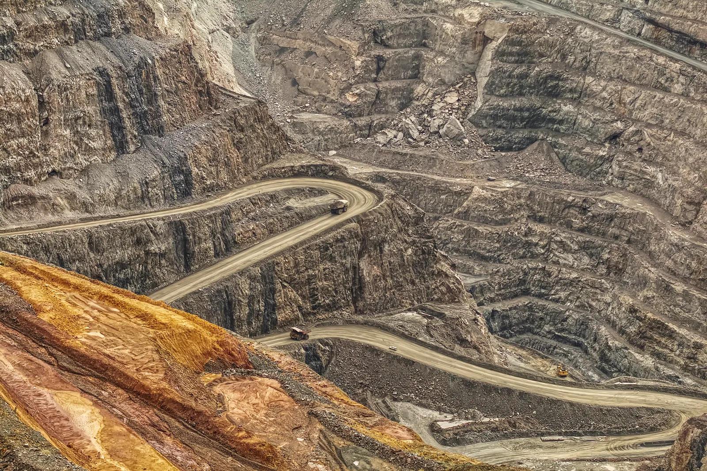
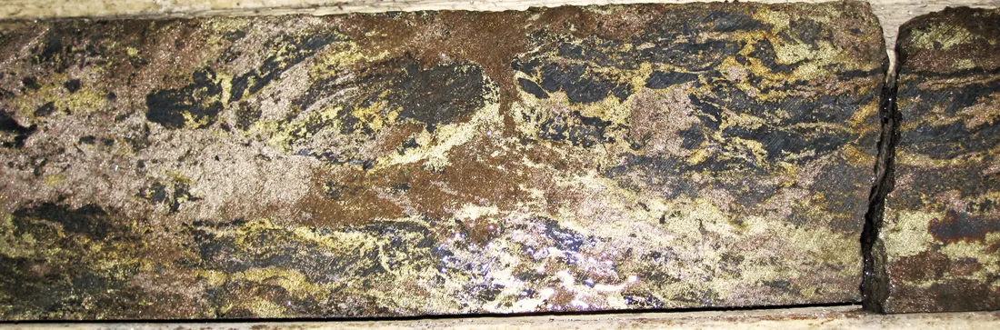
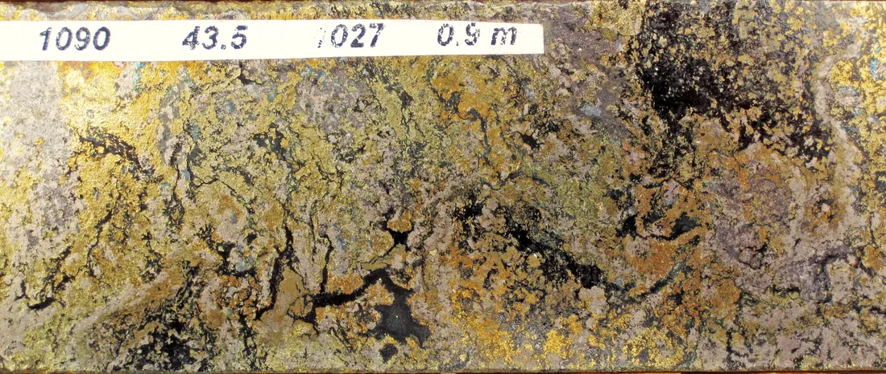
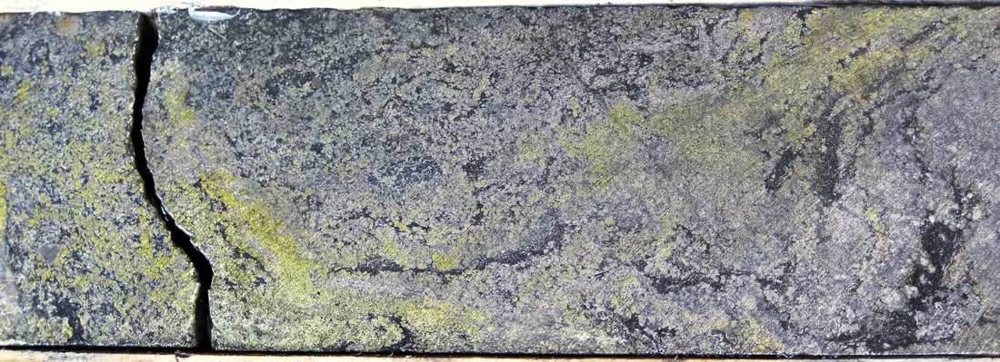
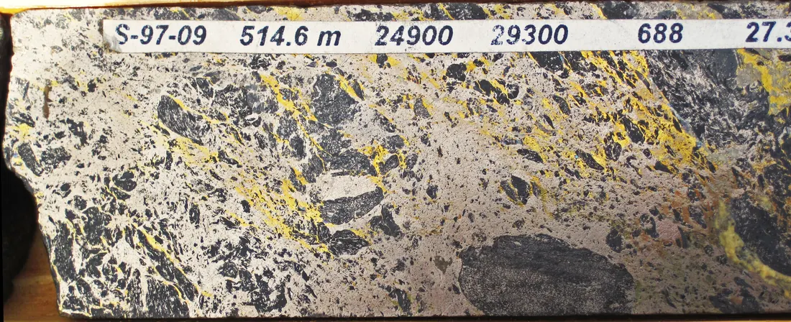
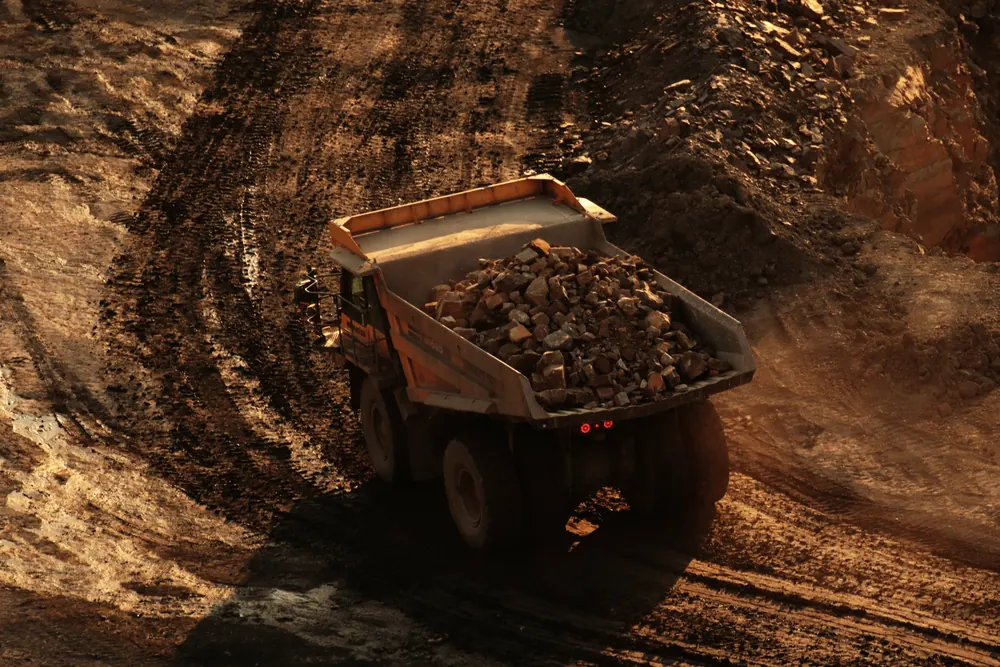
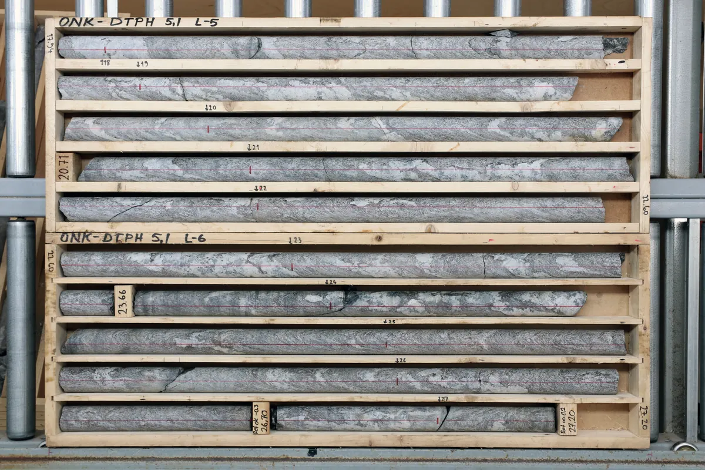
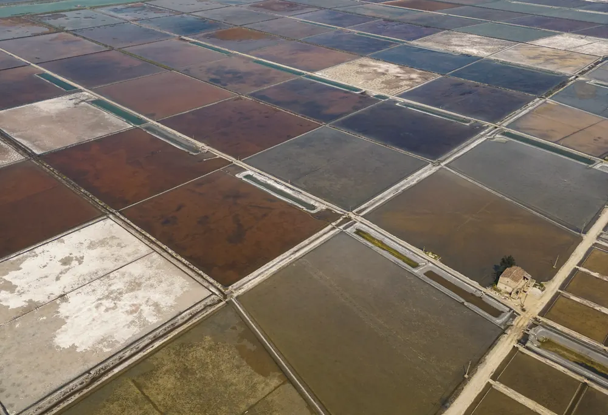
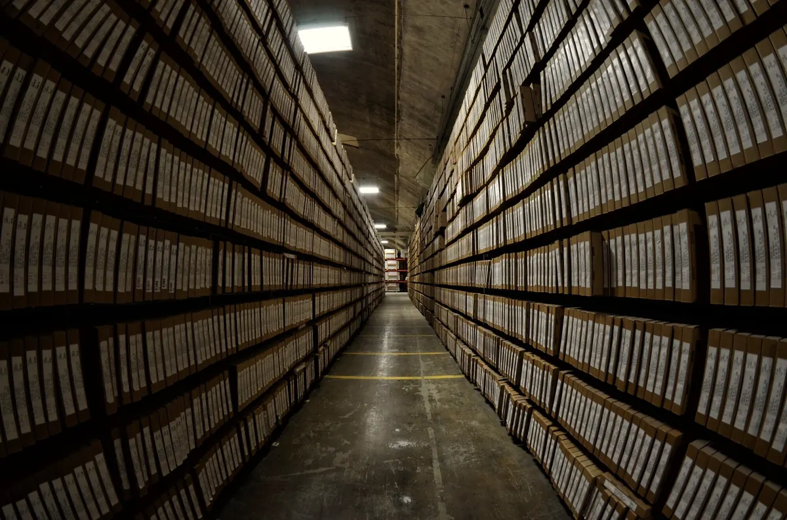
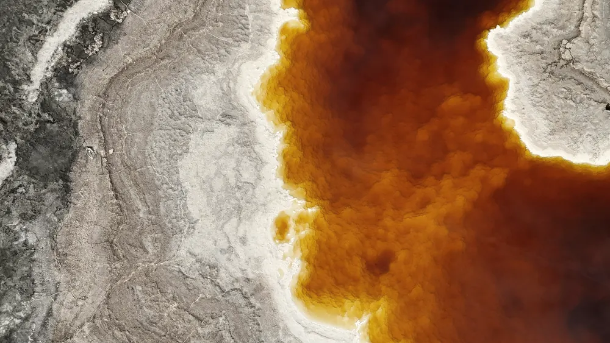

54
technical reports were amended and refiled after Ontario Securities Commission staff interventions between 2020 and 2023.
Canadian Securities Administrators · June 2025
Mining project intelligence
An evidence desk for a mining project’s technical reports, drill data, permits, decks and budgets. We are building it to link claims to the exact page or cell they came from, and show your team what changed, what disagrees and what is missing before a partner, lender or buyer starts asking.
Kestrel Copper, shown here and in the demo, is a fictional project.Scroll
A mining project is told across technical reports, drill logs, assay tables, permits, budgets and board decks. The same number turns up in a report, a deck and a spreadsheet, and not always the same way. Our first pilot brings those files together and traces the claims that matter back to their sources, before the other side’s technical team goes looking.




A drill core is a thread through the ground. Every metre is logged, sampled and labelled with where it came from.
The claims built on it deserve the same care. Photo credits
Why it matters
Regulators, majors and the people who do the work all describe the same thing. Every figure below links to where it came from.
54
technical reports were amended and refiled after Ontario Securities Commission staff interventions between 2020 and 2023.
Canadian Securities Administrators · June 202557%
of surveyed geoprofessionals call unmanaged historical data a key challenge for their organisation.
Seequent, Geoprofessionals Data Management Report · 2026Geoscientists spend a considerable amount of their time finding, cleaning and reconciling data before interpretation can begin.
BHP Insights · March 2026How it works
Bring the project as it is: technical reports, scanned PDFs, assay spreadsheets, slide decks, permits and budgets. Every page, slide and cell keeps its address.
Each figure and statement is linked to where it came from, with its date, units and context, so anyone can check it in one click.
Conflicting numbers, superseded studies and missing documents become findings. Each one shows both sources and gets an owner.
Sign off a dated, source-linked diligence pack: evidence index, reviewed answers, open questions and the actions that remain.
Try it
A fictional project and three questions a reviewer would ask. Open the sources, then decide what happens next.
When it matters
When a strategic investor’s technical team asks for the evidence, hand them a pack they can follow line by line, not a folder they have to decode.

Show a partner exactly what supports each figure in the project story, and which questions are still open, before they find them.

Give buyers and streaming companies a clear thread from every recovery and production assumption back to the testwork behind it.

Critical-minerals programmes ask for evidence. Assemble it once, with every claim traced to its source and every gap given an owner.

Know what a buyer’s diligence team will find in your files before they do, and walk in with the answers.

Our rules
Mining decisions carry real money and real liability. So the software is built to be checked, not trusted blindly.
If it cannot point to the source, it says so instead of guessing.
Gaps are reported as gaps in what was supplied, never as facts about the project.
Two figures that disagree stay side by side, with their context, until a person decides.
Qualified and Competent Persons stay responsible for technical judgement. Orethread prepares the evidence.
The first step
We are inviting developers and advanced explorers heading into a strategic investment, a partnership, an offtake, a funding application or a sale.
One project and one counterparty process. We agree the documents, the five questions that matter most and a delivery date.
We review the evidence with your team and give every open question an owner.
A source-linked brief, an evidence index, reviewed answers and the actions that remain, ready for the data room you already use.
Scope and a fixed fee are agreed before any work begins. Access, storage and deletion are agreed with you before any file is shared.
Company
Orethread is an early-stage company founded in the UK. Three founding seats are open for people who want to build it from the first line.
Leads the company, the first customer pilots and partnerships.
LinkedInOwn extraction, citations, retrieval and evaluation. You know when a system should answer “not found”.
Own the product end to end: uploads, the source viewer, the review flow, permissions and deployment.
A geologist or mining engineer who codes. Shape what the product checks and how its findings read to a technical reviewer.
The demo on this page uses a fictional project. The platform is being built around paid pilots, so the first teams shape it with their real projects.
No. Your team and advisers make the technical decisions. Orethread makes the evidence behind those decisions faster to find, compare and review.
A data room stores and shares files. Orethread does the work before anything is shared: it reads the files, links each claim to its source and shows conflicts and gaps with owners. The finished pack then goes into whichever data room you already use.
No. It shows where your documents agree, disagree or lack support. Compliance decisions stay with your Qualified Person or Competent Person and your advisers.
The pilot starts with PDFs, including scans, plus spreadsheets and slide decks. Maps can be stored and viewed inside documents; automated interpretation of maps and geological models is not part of the pilot.
Nothing is uploaded on this website. For a pilot, storage location, access and deletion are agreed in writing before any file is shared. Documents are treated as evidence, never as instructions to the software.
A fixed fee, agreed once we have seen the size and condition of the document pack and the questions you need answered.
Orethread was founded by Melusi Ndoro in the UK and is building its founding team now. If that could be you, use the Company section above.
We will show you where its thread runs, and where it breaks.